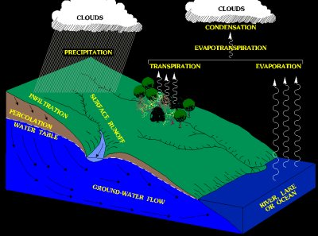
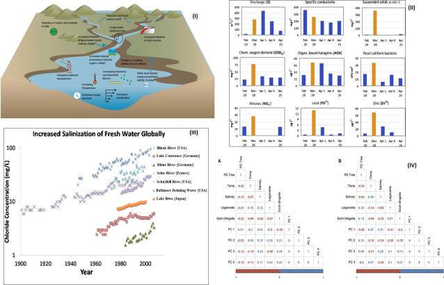

The water cycle is the continuous movement of water around the world in different forms, it involves various processes like precipitation, evaporation, condensation, and much more. The water cycle is what keeps our freshwater resources at a stable percentage, and that means it is very crucial for the ecosystem.
The sun is the primary driver of the hydrological cycle, which moves water in the oceans allowing it to evaporate into the water. The rising air current takes vapor upward into the air, where cold temperatures cause the water vapor to condense and move it into clouds
When vapored water goes upward, the temperature gets really low and water starts to condensate into clouds when clouds get heavier water condensate more as a result it turns into rains in a process called precipitation
When clouds get heavy, water flows onto the surface of the Earth as running rainwater as a result of gravity. A portion of runoff rainwater enters riverbeds and moves toward the oceans. Surface rainwater and groundwater flow to form fresh water in lakes and rivers. Although not all rainwater goes into rivers, much of it seeps into the ground as seepage. Some of this water remains close to the Earth's surface and can flow back into surface water bodies (and oceans) to form groundwater.
When water falls down as rains, streams, or runoffs it starts to move downward through the soil due to gravity which will replenish the groundwater.
Percolation occurs when water seeps into the ground at the surface runoff stage into the ground. For this reason, in the past, they used wells to bring water! It was underground! A well is an example of groundwater. Groundwater is stored underground. Water under the ground also helps plants grow!
Plants absorb water through their roots which will lead to an upward movement of water until it reaches the plants' leaves and gets to the atmosphere through some tiny openings called stomata.
Water cycle is a full system in nature that makes the water ecosystem and if you understood it. Great Work ;)
leading to changes in the timing, intensity, and geographic distribution of rainfall and flooding. These changes impact water availability for humans and ecological systems.
- Rising temprature can accelerate the melting of glaciers and
snowpack, the reduced snow and ice storage can lead to water
scarcity during dry sessions.
- In addition to sea level rise, climate change is causing more
floods and droughts to occur globally.
This can impact water supply for hydropower generation and irrigation
increases intensity and frequency of extreme weather event. Can also lead to more signification and contamination of water sources.
